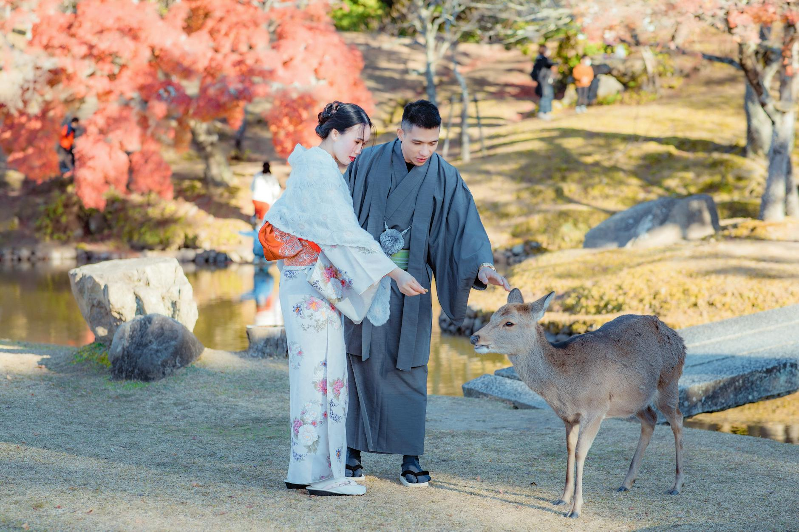
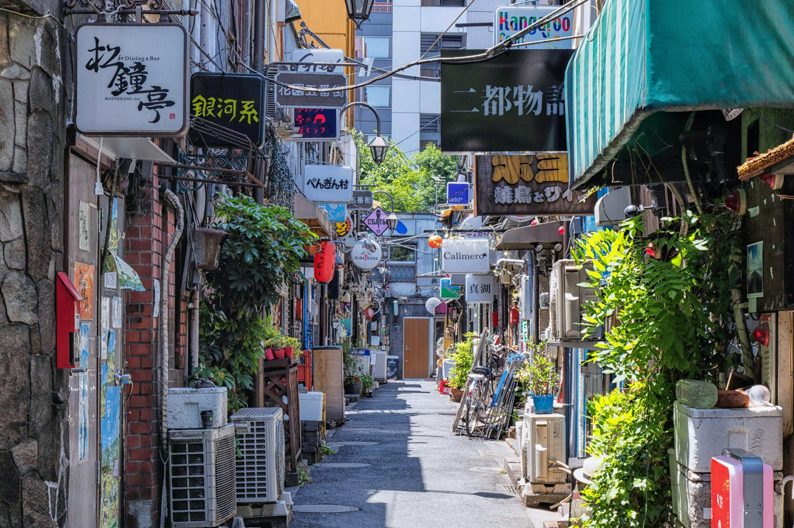
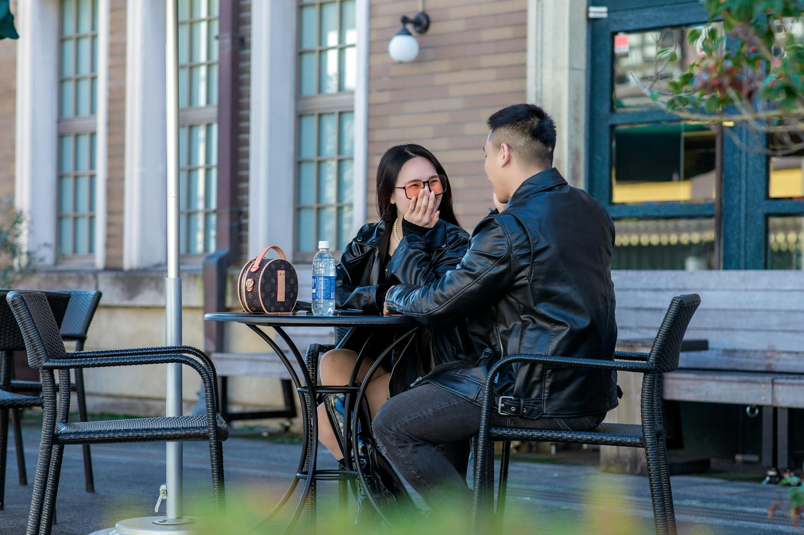
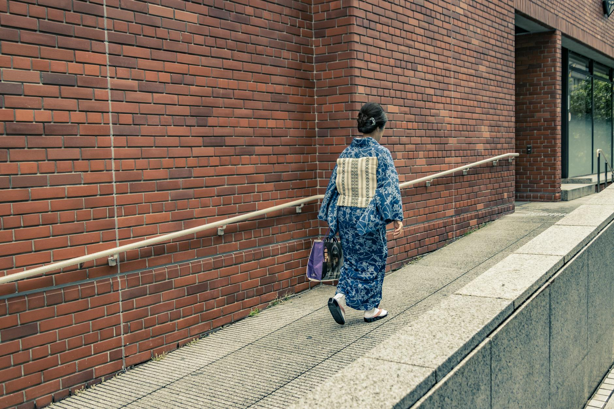
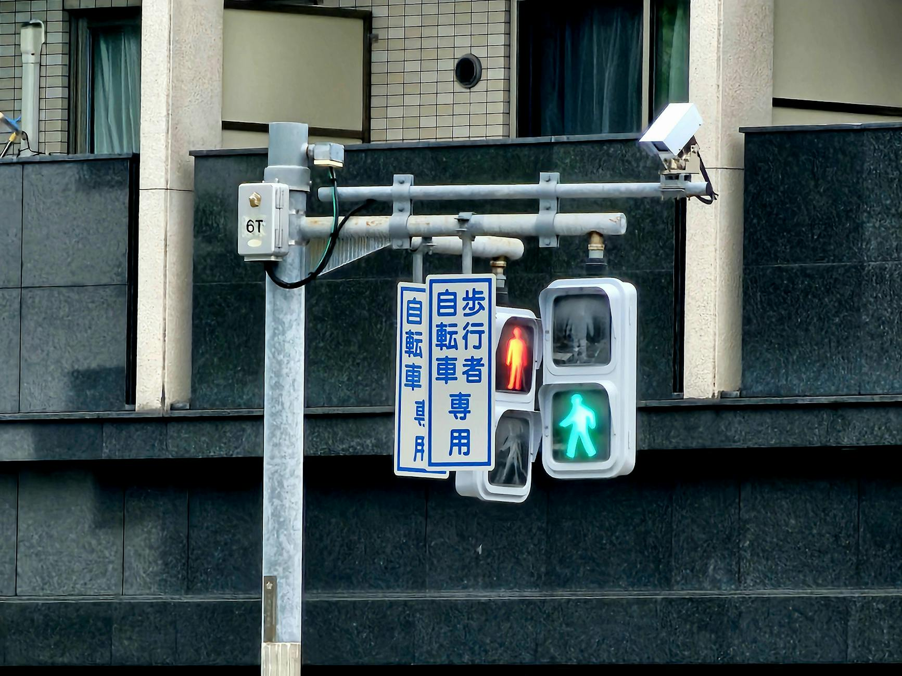
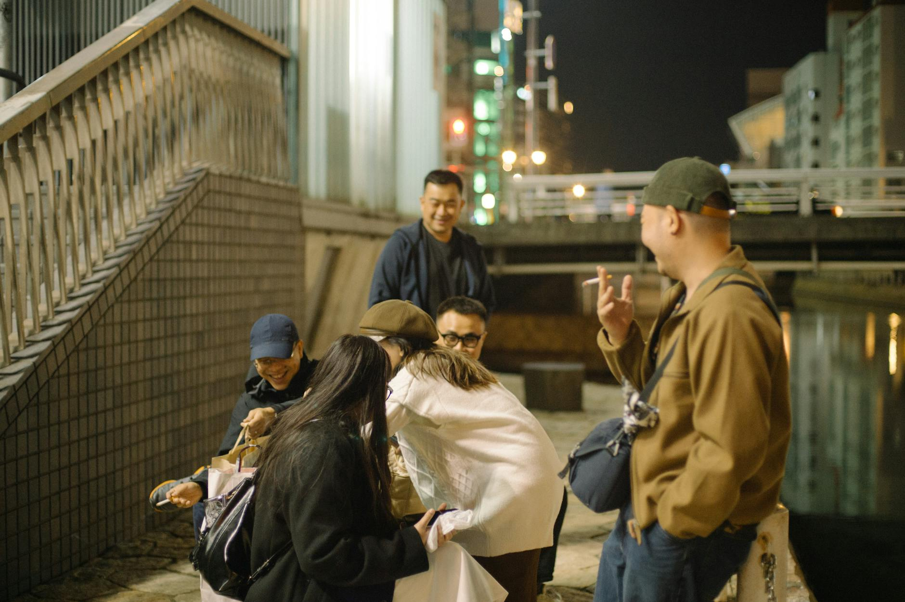
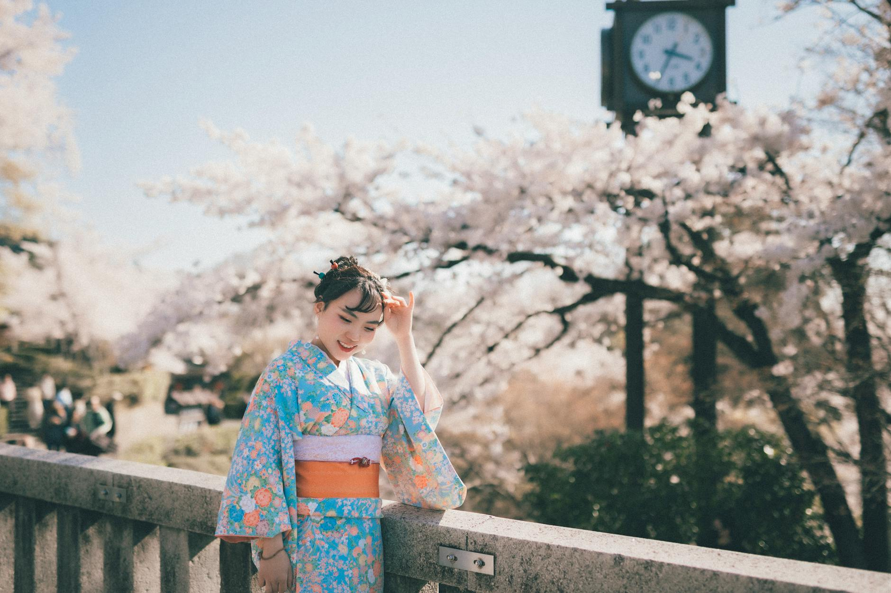

Pinakabagong Gabay
Mga detalyadong artikulo para sa mga dayuhang lalaki na nagde-date sa Japan
Paano Mag-plan ng Date sa LINE Nang Hindi Mukhang Mapilit
Ang LINE ang pangunahing paraan ng komunikasyon sa pakikipagsosyo sa Japan. Narito kung paano mag-imbita ng date nang pakiramdam niyang natural at hindi nakakabigat.
Basahin ang Artikulo →Paano Gawing Matagumpay ang Coffee Date sa Japan
Ang coffee date ay isa sa pinakakaraniwang unang date sa Japan — walang pressure, madaling tapusin kung kailangan, at perpekto para makilala ang isa't isa. Narito kung paano ito gawing epektibo.
Basahin ang Artikulo →Romance sa Trabaho sa Japan: Mga Panuntunan at Panganib para sa mga Dayuhang Manggagawa
Ang office romance ay karaniwan sa Japan—ngunit ang mga panuntunan ay di nakasulat at ang mga panganib ay totoo. Narito ang kailangan malaman ng mga dayuhang manggagawa bago lumampas sa hangganan.
Basahin ang Artikulo →
Paano Maiwasan ang Friend Zone sa Japanese Dating Culture
Ang dating culture sa Japan ay maaaring magmukhang malabo — at maraming dayuhang lalaki ang naaabutan sa friend zone nang hindi nila namamalayan. Narito kung paano ito maiwasan nang may respeto.
Basahin ang Artikulo →
Anong Uri ng Bar sa Japan ang Mainam para Makilala ang mga Babae
Hindi pare-pareho ang lahat ng bar sa Japan pagdating sa pagkilala ng bagong tao. Alamin kung aling venue ang bukas sa mga dayuhan.
Basahin ang Artikulo →
Ano ang Ibig Sabihin Kapag Inimbitahan Ka ng Hapones na Babae sa Kanyang Tahanan
Sa Japan, ang pag-imbitahan sa isang tao sa loob ng tahanan ay isang malaking bagay. Alamin kung ano ang tunay na ibig sabihin nito at kung paano mo ito dapat harapin.
Basahin ang Artikulo →Paano Humingi ng Tawad nang Tama sa Isang Japanese na Relasyon
Ang paghingi ng tawad sa Japan ay higit pa sa pagsasabi ng tamang salita. Alamin kung paano pinagsama ang katapatan, tamang oras, at gawa upang mapayapa ang relasyon pagkatapos ng alitan.
Basahin ang Artikulo →
Paano Pangalagaan ang Long-Distance na Relasyon sa isang Babaeng Hapones
Mahirap ang long-distance na relasyon, lalo na kapag may pagkakaiba pa ng kultura. Narito ang mga paraan para mapanatiling malakas ang inyong koneksyon kahit malayo kayo sa isa't isa.
Basahin ang Artikulo →Mga Seasonal na Ideya para sa Date sa Japan: Cherry Blossoms, Fireworks, at Autumn Leaves
Ang mga panahon sa Japan ay hindi lang tungkol sa klima — may kahulugan ang bawat isa. Alamin kung paano gamitin ang hanami, natsu matsuri, at koyo para lumikha ng mga di-malilimutang karanasan na nagpapakita ng iyong pagpapahalaga sa kultura.
Basahin ang Artikulo →
Paano Tumugon sa Mixed Signals sa Japanese Dating
Ang mixed signals sa Japanese dating ay madalas na hindi laro — kultura ito. Alamin kung paano maunawaan ang sitwasyon at tumugon nang hindi nagdudulot ng awkwardness.
Basahin ang Artikulo →
Paano Palawakin ang Iyong Social Circle sa Japan para Makilala ang Mas Maraming Japanese na Babae
Ang pagbuo ng tunay na social circle sa Japan ay nangangailangan ng pagsisikap. Narito ang mga napatunayang paraan para mapalawig ang iyong network at makilala ang mga Japanese na babae nang natural.
Basahin ang Artikulo →Ano ang Gokon? Paano Makakasamang mga Dayuhan sa Group Blind Date sa Japan
Ang gokon ay isang sikat na uri ng group blind date sa Japan — at isa ito sa pinakamahusay na paraan para makilala ng mga dayuhan ang mga Japanese na babae sa isang relaxed na setting. Narito ang lahat ng kailangan mong malaman.
Basahin ang Artikulo →Mga International Party at Mixer Events sa Japan: Gabay para sa mga Dayuhan
Ang mga international party at kokusai koryu events ay isa sa pinaka-natural na paraan para makilala ang mga Japanese na babaeng bukas sa pakikipagkaibigan sa mga dayuhan. Narito kung paano sila hanapin at mapakinabangan.
Basahin ang Artikulo →
Paano Gumamit ng Humor sa isang Babaeng Hapones Nang Hindi Naliligaw sa Pagsasalin
Ang tawanan ay isa sa pinakamabilis na paraan upang bumuo ng koneksyon — ngunit hindi palaging madaling itawid ang komedya sa pagitan ng kultura. Narito kung paano ito gamitin nang tama kapag nagde-date ng babaeng Hapones.
Basahin ang Artikulo →Paano Harapin ang Pagtanggi nang May Dignidad sa Japanese Dating Culture
Ang pagtanggi ay bahagi ng pag-date kahit saan — ngunit sa Japan, madalas itong nakabalot sa kagandahang-loob at hindi direktang paraan. Ang pag-alam kung paano basahin ang mga senyas at sumagot nang may galang ay magpoprotekta sa iyong reputasyon at dignidad.
Basahin ang Artikulo →Paano Mag-plano ng Romantic na Biyahe sa Loob ng Japan Kasama ang Iyong Japanese na Girlfriend
Kapana-panabik ang mag-plano ng biyahe sa Japan kasama ang iyong Japanese na girlfriend — ngunit ang kultura, inaasahan, at logistics ay maaaring iba sa sanay mo. Narito kung paano ito gawin nang tama.
Basahin ang Artikulo →Paano Magbigay ng Papuri sa Isang Haponesang Babae nang Natural
Ang mga papuri ay maaaring magbago ng impression sa unang pagkakataon. Narito kung paano purihin ang isang Haponesang babae nang natural — nang hindi siya nafafeel na awkward.
Basahin ang Artikulo →
Paano Mag-propose ng Kasal sa Isang Babaeng Hapones Bilang Dayuhan
Ang pag-propose sa Japan bilang isang dayuhan ay higit pa sa pagpili ng tamang singsing. Narito ang isang praktikal na gabay para gawin ito nang may respeto, katapatan, at kultural na kamalayan.
Basahin ang Artikulo →
Intercultural na Kasal sa Japan: Mga Hamon at Paano Harapin ang mga Ito
Ang intercultural na kasal sa Japan ay maaaring maging napaka-rewarding, ngunit may kasamang mga natatanging hamon pagdating sa inaasahan ng pamilya, estilo ng komunikasyon, at mga papeles. Narito ang dapat mong ihanda.
Basahin ang Artikulo →
Paano Makilala ang mga Babaeng Hapones sa mga Dambana, Pista, at Kultural na Okasyon
Ang mga dambana, pista, at kultural na okasyon ay ilan sa mga pinaka-natural na lugar para makilala ang mga babaeng Hapones. Narito kung paano samantalahin ang mga pagkakataong ito nang may respeto.
Basahin ang Artikulo →
Magandang Ba ang Izakaya para sa Unang Date sa Japan?
Ang mga izakaya ay relax, abot-kaya, at matatagpuan sa lahat ng dako — pero tama ba ito para sa unang date sa isang Hapones na babae? Ito ang kailangan mong malaman.
Basahin ang Artikulo →
Paano Gumagana ang mga Label sa Relasyon sa Japan: Boyfriend, Girlfriend, at Kokuhaku
Sa Japan, hindi basta-basta inaakala na kayo ay mag-syota — dapat itong ihayag nang direkta. Narito ang kailangan mong malaman tungkol sa mga label sa relasyon at kultura sa likod nito.
Basahin ang Artikulo →
Maaari Ka Bang Pumunta sa Onsen Kasama ang Iyong Partner sa Japan?
Ang onsen date ay maaaring maging napaka-romantiko — o nakakahiya — depende sa kung gaano kahusay ang iyong pagpaplano. Narito ang lahat ng kailangan mong malaman.
Basahin ang Artikulo →
Mga Ideya Para sa Christmas Date sa Japan: Bakit ang Disyembre 24 ang Pinaka-Romantikong Gabi ng Taon
Sa Japan, ang Christmas Eve ay hindi para sa pamilya — ito ay para sa mga mag-asawa. Narito kung paano mag-plano ng perpektong romantikong gabi sa Disyembre 24.
Basahin ang Artikulo →
Bakit Napakahalaga ng Pagiging Nasa Oras sa Japanese Dating
Sa Japan, ang pagdating nang huli sa isang date ay hindi lang bastos — maaari nitong tapusin ang lahat bago pa magsimula. Narito kung bakit mas mahalaga ang oras kaysa sa iyong iniisip.
Basahin ang Artikulo →
Pagsasama-sama sa Japan Bilang Dayuhan: Ano ang Dapat Asahan
Ang paglipat ng tirahan kasama ang Japanese na kasosyo ay isang malaking hakbang—at ang Japan ay may sariling mga alituntunin, opisyal man o hindi. Narito ang praktikal na gabay para sa mga dayuhan.
Basahin ang Artikulo →
Mga Masaya at Creative na Ideya sa Unang Date sa Osaka
Ang mainit na enerhiya at kultura ng pagkain ng Osaka ay ginagawa itong isa sa pinakamainam na lungsod sa Japan para sa isang relaxed at hindi malilimutang unang date.
Basahin ang Artikulo →
Language Barrier sa Pakikipaglabas sa Japan: Mga Hamon at Paraan Para Malampasan Ito
Ang language barrier ay isa sa pinakakaraniwang hadlang para sa mga dayuhan na nagde-date sa Japan. Narito ang isang tapat na pagtingin sa kung paano ito nakakaapekto sa relasyon—at kung ano ang talagang nakakatulong.
Basahin ang Artikulo →
Gaijin Fever sa Japan: Ano Ito at Paano Mo Malalaman
Totoo ang gaijin fever — pero totoo rin ang tunay na cross-cultural na pagkaakit. Alamin kung paano ang pagkakaiba bago ka mag-invest ng damdamin.
Basahin ang Artikulo →
Pag-unawa sa mga Inaasahan ng Pamilya sa Pakikipagtipan sa Isang Babaeng Hapones
Ang pakikipagtipan sa isang babaeng Hapones ay kadalasang nangangailangan ng pag-unawa sa mga inaasahan ng pamilya. Narito ang kailangan mong malaman para mapanatili ang isang maayos na relasyon.
Basahin ang Artikulo →
Paano Humingi ng Pangalawang Date sa Japan (Nang Hindi Siya Natatakot)
Maayos ang unang date — ngayon ano na? Ang paghiling ng pangalawang date sa Japan ay nangangailangan ng pagbabasa ng mga banayad na senyales at maingat na pagpili ng tamang oras. Narito ang mga talagang epektibo.
Basahin ang Artikulo →
Pag-unawa sa Ghosting at Biglaang Katahimikan sa Japanese Dating
Huminto na siya sa pagtugon nang walang paliwanag. Sa Japan, may kultural na kahulugan ang ghosting na madaling maling maintindihan. Narito ang tunay na nangyayari.
Basahin ang Artikulo →
Mga Paksa ng Usapan sa UnangDate sa Isang Babaeng Hapones
Hindi alam kung ano ang sasabihin sa unang date sa Japan? Ang mga praktikal na paksang ito ay tutulong sa iyo na natural na makipag-konekta at mag-iwan ng magandang impresyon.
Basahin ang Artikulo →
Fetishization vs. Tunay na Interes: Ano ang Talagang Nararamdaman ng mga Babaeng Hapon
May malaking pagkakaiba sa pagitan ng pagkaakit sa isang tao bilang indibidwal at ng pagbabawas sa kanya sa isang kultural na stereotipo. Tutulungan ka ng gabay na ito na suriin ang iyong mga motibasyon at lumapit sa pakikipagtipan sa Japan nang may katapatan.
Basahin ang Artikulo →
Mga Table Manners na Dapat Mong Malaman para sa Date sa Japanese Restaurant
Ang pagkain sa Japan ay higit pa sa simpleng pagkain — ito ay isang ritwal. Ang pag-alam sa mga hindi nakasulat na panuntunan bago ang iyong date ay maaaring magpabago ng iyong impresyon.
Basahin ang Artikulo →
Mga Stereotype na Nakakapinsala sa Pakikipagtipan sa Japan
Ang pagdadala ng maling paniniwala tungkol sa mga babaeng Hapon sa isang relasyon ay isa sa pinakamabilis na paraan para mapalayo ang isang tao. Narito ang kailangan mong baguhin bago ka magsimulang makipagtipan sa Japan.
Basahin ang Artikulo →
Paano Magsimula ng Usapan sa Isang Babaeng Hapon Online
Ang iyong unang mensahe ay mas mahalaga kaysa sa iniisip mo. Alamin kung paano simulan ang usapan sa isang babaeng Hapon online nang may paggalang at katapatan.
Basahin ang Artikulo →
Paano Magtatag ng Tiwala sa Relasyong Hapon Bilang Dayuhan
Sa mga relasyong Hapon, ang tiwala ay unti-unting naitatayo sa pamamagitan ng mga gawa, hindi salita. Narito kung paano ito magagawa ng mga dayuhang lalaki.
Basahin ang Artikulo →
Paano Ipahayag ang Iyong Damdamin sa Isang Relasyon sa Hapon
Ang pagpapahayag ng damdamin sa Japan ay naiiba sa nakasanayan ng maraming dayuhang lalaki. Narito kung paano maging bukas nang paraan na maiintindihan at ipagpapahalaga ng iyong Japanese na kasosyo.
Basahin ang Artikulo →
Paano Resolbahin ang mga Alitan Dulot ng Pagkakaiba ng Kultura sa Relasyon sa Japan
Normal ang mga alitan sa magkaibang kultura sa isang relasyon — pero hindi nito kailangang sirain ang inyong pagsasama. Narito kung paano harapin ang mga ito kasama ang iyong Haponesang partner.
Basahin ang Artikulo →
Paano Naiiba ang Pakikipagtipan ng mga Babaeng Hapon
Ang pag-unawa kung paano iniisip ng mga babaeng Hapon ang pakikipagtipan ay makakatulong sa iyo na maiwasan ang maling interpretasyon ng mga senyales at makahanap ng tunay na koneksyon.
Basahin ang Artikulo →
Paano Ipakita ang Romantikong Interes Nang Hindi Pinipigilan ang Isang Haponesang Babae
Ang pagpapakita ng interes sa Japan ay nangangailangan ng pasensya at banayad na paraan. Alamin kung paano maipahayag ang iyong pagmamahal nang hindi siya napipigilan.
Basahin ang Artikulo →
Mga Scam sa Dating Apps sa Japan: Ano ang Dapat Malaman ng mga Dayuhan
Ang mga dating app sa Japan ay maaaring maging paraan para makakilala ng tao — ngunit alam ng mga scammer na ang mga dayuhan ay madaling target. Narito kung paano mo mapangalagaan ang iyong sarili.
Basahin ang Artikulo →
Paano Makilala ang mga Babaeng Hapones sa Language Exchange Events
Ang mga language exchange event ay nagbibigay ng natural at walang pressure na pagkakataon para makilala ang mga babaeng Hapones na bukas sa pakikipag-ugnayan sa mga dayuhan. Narito kung paano mo ito magagamit nang mabuti.
Basahin ang Artikulo →
Pagpapakita ng Pagmamahal sa Publiko sa Japan: Ano ang Katanggap-tanggap at Hindi
Ang Japan ay may sariling mga hindi nakasulat na patakaran pagdating sa pagmamahal sa publiko. Ang pag-unawa sa mga ito ay makatutulong sa iyo na maiwasan ang mga mahirap na sandali at ipakita ang tunay na paggalang sa iyong kasosyo.
Basahin ang Artikulo →
Pinakamahusay na Dating Apps para sa mga Dayuhan sa Japan: Pairs, Bumble at Tinder Inihambing
Hindi pantay ang bisa ng lahat ng dating apps para sa mga dayuhan sa Japan. Tinutukoy ng gabay na ito ang tatlong pangunahing platform — Pairs, Bumble, at Tinder — para makatulong sa iyong pumili ng pinaka-angkop.
Basahin ang Artikulo →
Ang Sining ng Kokuhaku: Paano Ipahayag ang Iyong Damdamin sa Japan
Sa Japan, ang mga relasyon ay bihirang mangyari nang walang kokuhaku — isang direktang pagpapahayag ng damdamin. Ang pag-unawa sa tradisyong ito ay mahalaga para sa iyong tagumpay sa pag-ibig.
Basahin ang Artikulo →
Paano Makabawi Pagkatapos ng Masamang Unang Date sa Japan
Nangyayari sa lahat ang masamang unang date. Sa Japan, ang iyong tugon pagkatapos ay madalas na mas mahalaga kaysa sa date mismo. Narito kung paano makabawi nang hindi lalong pinapalala ang sitwasyon.
Basahin ang Artikulo →
Paano Harapin ang Age-Gap na Relasyon sa Japan nang may Respeto
Ang mga relasyong may malaking pagkakaiba sa edad ay umiiral sa Japan, ngunit hinuhubog ng kultura kung paano ito lumalabas. Narito kung paano lapitan ito nang tapat at may respeto.
Basahin ang Artikulo →
Ligtas na Pampublikong Lugar para sa Unang at Pangalawang Date sa Japan
Ang pagpili ng tamang lugar sa unang date sa Japan ay nagtatatakda ng tono ng lahat ng susunod. Ang mga pampublikong lugar na ito ay komportable, maginhawang kausap, at angkop sa kultura.
Basahin ang Artikulo →
Ano ang Isusuot sa Unang Date sa Japan (Gabay para sa Mga Lalaki)
Ang unang impresyon ay mahalaga sa lahat ng lugar, ngunit sa Japan ay higit pa ito. Narito kung paano magbihis nang maayos nang hindi nag-iisip nang labis.
Basahin ang Artikulo →
Kailan at Paano Kausapin ang Exclusivity sa Pakikipaglibog sa Japan
Sa Japan, ang pagiging exclusive ay bihirang mangyari sa isang direktang usapan. Ang pag-unawa sa kultura at mahinahing senyales ang susi sa tagumpay.
Basahin ang Artikulo →
Ano ang Normal na Dalas ng Pagte-text sa Maagang Pakikipag-date sa Japanese?
Sa maagang Japanese dating, madalas mas kalmado at balanse ang pagte-text kaysa inaasahan ng maraming foreigner. Heto kung paano basahin ang ritmo niya at tumugon nang maayos.
Basahin ang Artikulo →
Paano Maiwasang Mapagkamalan Bilang Playboy sa Japanese Dating Culture
Pinahahalagahan ng Japanese dating culture ang katapatan nang higit sa lahat. Narito kung paano matitiyak na tunay ang iyong intensyon — at hindi kahina-hinala.
Basahin ang Artikulo →
Mga Palatandaan na Hindi Siya Interesado Nang Magalang sa Japan
Pinahahalagahan ng kultura ng Japan ang pagkakaisa kaysa direktang paghaharap. Ibig sabihin, ang malinaw na 'hindi' ay madalas na mukhang 'siguro' o katahimikan. Narito kung paano basahin ang tunay na mensahe.
Basahin ang Artikulo →
Pinakamahusay na Low-Pressure na First Date Ideas sa Tokyo
Hindi kailangang stressful ang first dates sa Tokyo. Ang mga low-key na ideyang ito ay tumutulong sa inyong dalawa na maging komportable, mapanatiling natural ang usapan, at makalikha ng tunay na koneksyon.
Basahin ang Artikulo →
Paano Maghanda sa Pagkilala sa mga Magulang ng Iyong Japanese na Girlfriend
Mahalagang hakbang ang pagkilala sa mga magulang. Maghanda gamit ang magalang na pagbati, simpleng regalo, at mahinahong usapan.
Basahin ang Artikulo →
Pagbuo ng Pangmatagalang Relasyon sa Japan Bilang Dayuhang Lalaki
Mas nagiging matatag ang pangmatagalang relasyon sa Japan kapag dahan-dahang binubuo ang tiwala, malinaw ang usapan, at magkatugma ang mga plano sa hinaharap.
Basahin ang Artikulo →
Mga Tuntunin sa Pagbibigay ng Regalo sa Japanese Dating: Ano ang Iaalok at Ano ang Dapat Iwasan
Sa Japanese dating, ang regalo ay mas okay kung simple at may pag-iisip. Alamin kung kailan magbigay, ano ang angkop, at ano ang maaaring maging awkward.
Basahin ang Artikulo →
Karaniwang Pagkakamali ng mga Dayuhang Lalaki Kapag Nakikipag-date sa Japan
Iwasan ang mga karaniwang sablay ng mga dayuhang lalaki sa Japan—maunawaan ang pahiwatig sa komunikasyon, bilis, asal, at pagplano.
Basahin ang Artikulo →
Paano Bumuo ng Epektibong Dating App Profile sa Japan (para sa mga Dayuhang Lalaki)
Gumawa ng profile na mainit, mapagkakatiwalaan, at sensitibo sa kultura—walang gimmicks. Mga tip sa photos, bio, detalye, at kaligtasan para sa Japan.
Basahin ang Artikulo →
Mga Red Flag na Dapat Bantayan sa Pagde-date sa Japan
Alamin kung ano ang pagkakaiba ng cultural quirks at totoong red flags sa Japan—kasama ang malinaw na hakbang para manatiling ligtas, magtakda ng hangganan, at mag-date nang may respeto.
Basahin ang Artikulo →
Paano Basahin ang Mga Palatandaan ng Interes para sa Ikalawang Date mula sa Isang Japanese Woman
Madaling makita ang ikalawang date sa pamamagitan ng komportableng usapan, tuloy-tuloy na pag-follow up, at malinaw na kilos. Narito ang mga senyales na dapat bantayan.
Basahin ang Artikulo →
Sino ang Magbabayad sa Date sa Japan? Paano Hawakan ang Bill nang Maayos
Ang pagbabayad ng bill sa isang date sa Japan ay may sariling mga hindi nakasulat na alituntunin. Narito ang kailangan mong malaman para mahawakan ito nang maayos.
Basahin ang Artikulo →
Mga Panuntunang LINE na Epektibo sa Japanese Dating Culture
Ang LINE ang puso ng komunikasyon sa Japanese dating. Ang pag-alam kung kailan sumasagot, ano ang ipapadala, at paano basahin ang katahimikan ay mahalaga para mapalakas ang koneksyon.
Basahin ang Artikulo →
Paano Mag-imbitang Lumabas ang Isang Haponesang Babae Nang Hindi Mukhang Mapanghikayat
Ang pag-imbitang lumabas sa Japan ay isang maingat na sining. Narito kung paano imbitahan ang isang Haponesang babae sa paraan na natural, magalang, at tunay na kaakit-akit.
Basahin ang Artikulo →
Japanese Dating Etiquette para sa mga Dayuhan: Ano ang Dapat Mong Malaman
Alamin ang mga hindi sinasabing alituntunin ng pakikipaglovelife sa Japan — mula sa pagiging nasa oras at pagbibigay ng regalo hanggang sa pagbabayad ng bill at pag-unawa sa indirect na komunikasyon.
Basahin ang Artikulo →
Pag-unawa sa Japanese Dating Culture: Kumpletong Gabay para sa mga Dayuhang Lalaki
Lahat ng kailangan mong malaman tungkol sa kung paano tinitingnan ng mga babaeng Hapon ang pakikipaglovelife at kung ano ang nagpapakaiba sa dating culture ng Japan.
Basahin ang Artikulo →
Saan Makakakilala ng mga Babaeng Hapon: Apps, Lugar, at mga Event
Ang pinakatotoong mga opsyon para sa mga dayuhang lalaki sa Japan — mula sa mga dating app at language exchange hanggang hobby class, bar, at pang-araw-araw na buhay.
Basahin ang Artikulo →
Pag-unawa sa Paraan ng Komunikasyon ng mga Babaeng Hapon: Ang Hindi Sinasabi
Paano basahin ang mga hindi direktang senyales, ano talaga ang ibig sabihin ng "oo", mga pattern ng LINE texting, at kung paano ipahayag ang iyong sariling interes.
Basahin ang Artikulo →